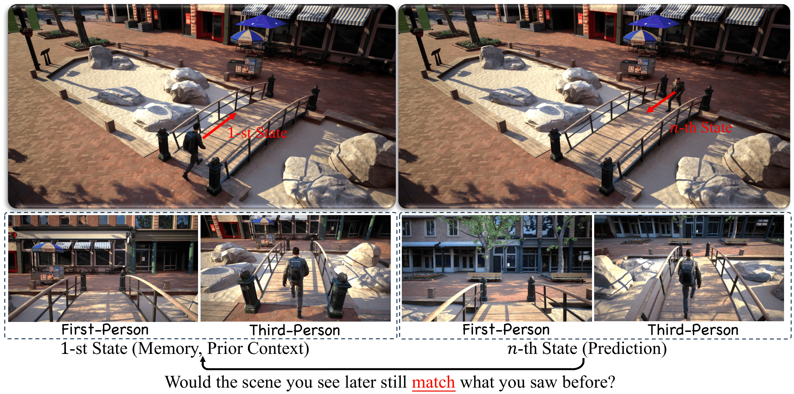
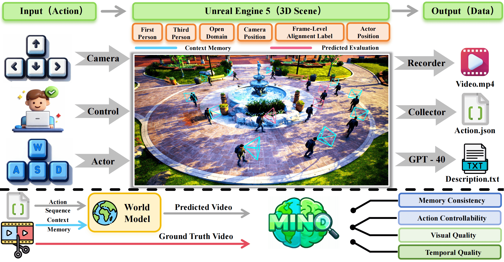
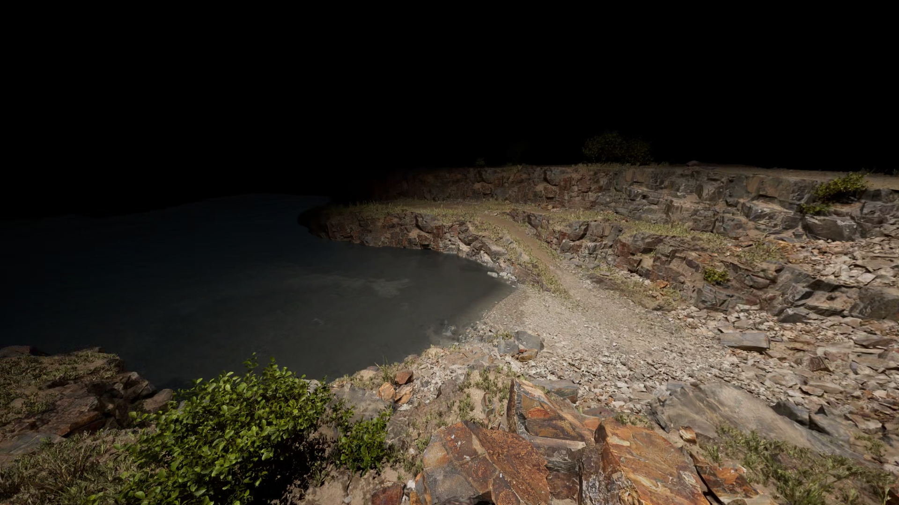
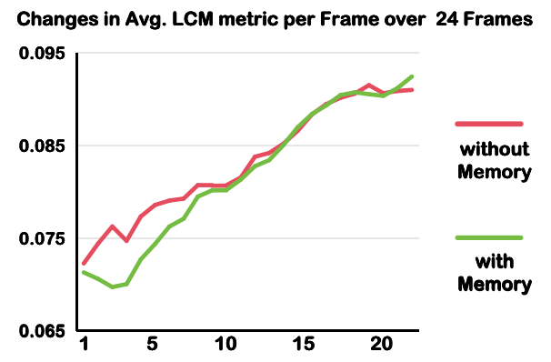

World models aim to understand, remember, and predict dynamic visual environments, yet a unified benchmark for evaluating their fundamental abilities remains lacking. To address this gap, we introduce MIND, the first open-domain benchmark for evaluating Memory consIstency and action coNtrol in worlD models. MIND contains 250 high-quality videos at 1080p and 24 FPS, including 100 (first-person) + 100 (third-person) video clips under a shared action space and 25 + 25 clips across varied action spaces covering eight diverse scenes. We design an efficient evaluation framework to measure two core abilities: memory consistency and action control, capturing temporal stability and contextual coherence across viewpoints. Furthermore, we design various action spaces, including different character movement speeds and camera rotation angles, to evaluate the action generalization capability across different action spaces under shared scenes. To facilitate future performance benchmarking on MIND, we introduce MIND-World, a novel interactive Video-to-World baseline. Extensive experiments demonstrate the completeness of MIND and reveal key challenges in current world models, including the difficulty of maintaining long-term memory consistency and generalizing across action spaces.

Overview of the MIND. We build and collect the first open-domain benchmark using Unreal Engine 5, supporting both first-person and third-person perspectives with 1080p resolution at 24 FPS.
Distribution for Scene Categories and Action Space in MIND Dataset. MIND supports open-domain scenarios with diverse and well-balanced action spaces.

How to achieve open-domain generalization with readily available large-scale data (e.g., Minecraft Datasets)?
0.8 X
1.0 X
How to overcome the interference caused by the mismatch between the implicit action space in context memory and the training distribution, thereby preventing catastrophic performance degradation of memory-augmented models during action space generalization?
How to effectively decouple visual prompts from action dynamics, thereby preventing world models from being interfered by initial images/videos when executing precise action sequences, and achieving true precise action control?

How to effectively maintain and leverage long-context memory, thereby enabling world models to achieve and sustain high consistency with ground-truth trajectories in ultra-long-horizon rollouts?
How to ensure high consistency in world models when repeatedly generating the same region?
How to endow world models with the ability to correctly model physical interactions and spatial relationships between agents and the environment?
@misc{ye2026mind,
title={MIND: Benchmarking Memory Consistency and Action Control in World Models},
author={Yixuan Ye and Xuanyu Lu and Yuxin Jiang and Yuchao Gu and Rui Zhao and Qiwei Liang and Jiachun Pan and Fengda Zhang and Weijia Wu and Alex Jinpeng Wang},
year={2026},
eprint={2602.08025},
archivePrefix={arXiv},
primaryClass={cs.CV},
url={https://arxiv.org/abs/2602.08025},
}
If you find our work useful, please consider citing our paper.